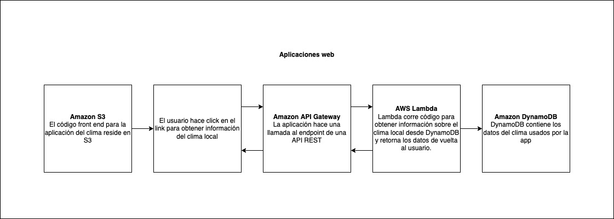
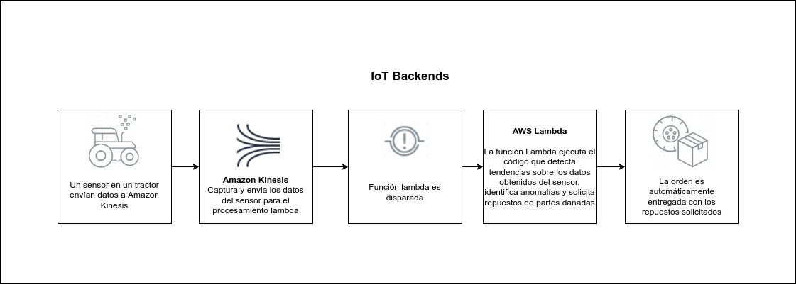
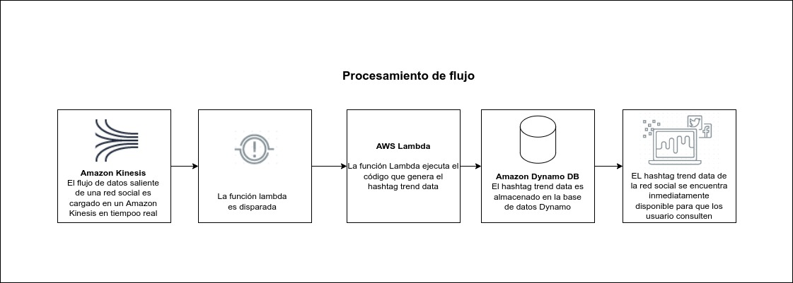
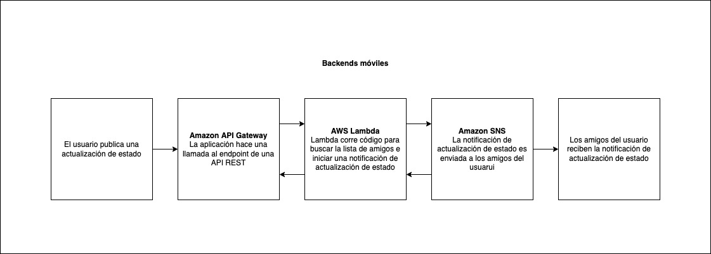

Aplicaciones
La programación funcional es un paradigma de propósito general, pero se destaca especialmente en las siguientes areas:
- Implementación de lenguajes de programación. Si alguna vez ha escrito un compilador o interprete, estos están generalmente divido en varias etapas, de las cuales muchas toman una estructura tipo árbol, la procesan de alguna forma y retornan una nueva estructura tipo árbol. Este tipo de procesos pueden ser expresados de forma más clara en lenguajes funcionales ( Características como "pattern-matching" y muy buen soporte para recursión eficiente, lo cual hace más fácil trabajar con árboles), permitiendo desarrollar compiladores consistentes.

- Concurrencia y sistemas paralelos. Las restricciones de no mutación en lenguajes funcionales generalmente permite que muchos procesos accedan y compartan los mismos datos alentando un diseño "embarrassingly parallel", donde diferentes hilos de ejecución no necesitan comunicarse entre si para procesar la información. En Haskell (por lo menos el subset seguro) el tipo sistema permite que el compilador sepa cuales partes del programa puedan se automáticamente paralelizados, al menos en teoría, lo cual es una ventaja potencial.
- Sistemas altamente seguros. Los lenguajes funcionales fuertemente tipados, particularmente Haskell, son muy claros en las garantías de lo que el programa puede y no puede hacer. Los lenguajes de asistencia de pruebas, como Coq, que normalmente son muy semejantes a los lenguajes funcionales, pueden proveer pruebas arbitrarias básicas de los programas que se escriben en ellos. INRIA escribió un compilador -probablemente correcto- de C en Coq y OCaml. Por ejemplo, lo más impresionante de todo, además de que se ha demostrado que el proyecto está libre de bugs y esto sea escalable, es que el desempeño del código generado es muy respetable.


- Procesamiento de datos. Aplicar técnicas usadas en programación funcional para realizar operaciones sobre conjuntos de datos, tales como transformaciones, filtros, agregaciones, entre otras, permiten una mayor eficiencia y legibilidad.
- Deep Learning. Los modelos de deep learning se asemejan a la programación funcional en su particularidad de componer funciones, puesto que las redes neuronales están diseñadas de la misma manera, realizando transformaciones de funciones de capa a capa. Además, al operar sobre los datos de entrada, estos no se modifican sino que se generan nuevos valores para usar en las siguientes capas, esto se corresponde con la característica de inmutabilidad. Muchos de los procesos comunmente realizados al entrenar modelos de machine learning tienen un funcionamiento intrínsecamente funcional.
Algunos ejemplos de aplicaciones concretas
1. Sigma (Fighting spam with Haskell)
Sigma es un sistema que usa facebook para identificar de forma pro-activa acciones maliciosas en las interaciones de sus usuarios, las cuales incluyen spam, ataques de phising, links a malware entre otros. El contenido detectado por Sigma es removido de forma automática y así evitando que aparezca en los post del usuario.
--->más información aquí<---
2. Jane Street
Es una firma de trading que opera alrededor del mundo, ellos implementan la mayoría de sus sistemas en ocaml, expresan que esto les permite maximizar la productividad de sus empleados. Además aportar en varios proyectos opensource.
--->más información aquí<---
3. QuickCheck
QuickCkeck es una librería en haskell para la generación de pruebas aleatorias en donde se busca probar las propiedades que deberían de cumplir las funciones implementadas.
El programador provee la especificación del programa, en forma de propiedades que la función debería satisfacer, la librería entonces genera una gran cantidad de casos de prueba aleatorios para probar que la función cumpla su cometido.
--->más información aquí<---
4. WhatsApp - ERLANG
Este lenguaje se caracteriza por aplicar tanto programación funcional como concurrente. Fue diseñado para tener un enfoque hacia las aplicaciones distribuidas y tolerantes a fallos. Dentro de sus características principales encontramos la capacidad de proporcionar cambio en caliente de código. Estas propiedades lo han hecho útil dentro del campo de las telecomunicaciones, razón por la cual empresas como WhatsApp y T-Mobile lo han usado dentro del desarrollo de algunos de sus proyectos.--->más información aquí<---
5. LOLITA
En la universidad de DURHAM Inicialmente usaron Miranda y luego pasaron a Haskell, desarrollando un proyecto de siete años para construir LOLITA(Large-scale, Object-based, Linguistic Interactor, Translator, and Analyser), un programa de 30.000 líneas para la comprensión de lenguaje natural.
--->más información aquí<---
6. Ericsson-erlang:
Erlang fue desarrollado por Ericsson como un lenguaje de programacion concurrente que facilitara el desarrollo de aplicaciones para telefonos. Ya se han escrito aplicaciones con más de 130.000 lineas de código y se hace mucho más corto y rápido de desarrollar.
--->más información aquí<---
7. Cardano
Cardano es una plataforma descentralizada que ofrece funciones avanzadas a la comunidad blockchain, como las transacciones veloces y directas. Esta plataforma con tecnología blockchain es competencia directa de Ethereum y tiene una estructura en capas que utiliza el token digital ADA para transferir y recibir valor.
--->más información aquí<---
8. Cryptol
Es un lenguaje de dominio específico desarrollado por Galois, ideal para desarrollar y verificar algoritmos de encriptamiento. Actualmente lo usan muchas empresas privadas y el gobierno de Estados Unidos. Aunque tiene un excelente desempeño en rutinas criptográficas básicas, hay herramientas más elaboradas para protocolos criptográficos completos como SSL.
--->más información aquí<---
9. ReactiveX
ReactiveX es una biblioteca para la composición de programas asíncronos y basados en eventos usando secuencias observables.
Extiende el patrón observador (observer pattern) para soportar secuencias de datos y eventos, y añade operadores que permiten la composición de secuencias de forma declarativa mientras abstrae las preocupaciones sobre cosas como manejo de hilos de bajo nivel, sincronización, seguridad de hilos, estructuras de datos concurrentes y input/output no bloqueante.
--->más información aquí<---
10. AWS Lambda
Es un servicio ofrecido por Amazon Web Services que permite ejecutar código sin necesidad de un servidor. Se puede usar en los siguientes escenarios:
- Operar sitios web sin servidor 
- Conversión rápida de documentos
- Representación de página predictiva
- Trabajar con servicios externos 
- Análisis de registro sobre la marcha
- Backups automatizados en trabajos del dia a dia
- Procesar archivos dentro de S3
- Limpieza de backend
- Procesamiento de grandes volúmenes de datos en tiempo real.
Este es uno de los mejores casos de uso para aprovechar el modelo de precios de los sitios web estáticos alojados en Lambda y S3.
Considere alojar la interfaz web en S3 y acelerar la entrega de contenido con el almacenamiento en caché de Cloudfront.
La interfaz web puede enviar solicitudes a las funciones de Lambda a través de puntos finales HTTPS de API Gateway . Lambda puede manejar la lógica de la aplicación y conservar los datos en un servicio de base de datos completamente administrado (RDS para una base de datos relacional o DynamoDB para una base de datos no relacional).
Puede alojar sus funciones y bases de datos de Lambda dentro de una VPC para aislarlas de otras redes. En cuanto a Lambda, API Gateway y S3, solo paga después del tráfico incurrido, el único costo fijo será ejecutar el servicio de la base de datos.
Si proporciona documentos (por ejemplo, especificaciones, manuales o registros de transacciones) a sus usuarios, es posible que no siempre los quieran en un formato estándar. Si bien muchos usuarios pueden estar contentos con una página HTML, otros pueden querer descargar un PDF o pueden necesitar el documento en un formato más especializado.
Por supuesto, podría almacenar copias de cada documento en todos los formatos que probablemente se soliciten. Pero el almacenamiento de documentos estáticos puede ocupar una cantidad considerable de espacio y no es práctico si el contenido de los documentos cambia con frecuencia o en respuesta a las entradas del usuario. A menudo es mucho más fácil generar los documentos sobre la marcha. Este es exactamente el tipo de tarea que una aplicación de AWS Lambda puede manejar rápida y fácilmente: recuperar el contenido requerido, formatearlo y convertirlo, y servirlo para mostrarlo en una página web o descargarlo.
Sin embargo, puede usar AWS Lambda para hacer algo más que simplemente limpiar datos. Si está utilizando la representación predictiva de páginas para preparar las páginas web para su visualización, en función de la probabilidad de que el usuario las seleccione, AWS Lambda puede desempeñar un papel de apoyo importante.
Puede, por ejemplo, usar una aplicación basada en Lambda para recuperar documentos y archivos multimedia, que pueden usarse en la siguiente página solicitada, y para realizar las etapas iniciales de representación para su visualización. Si una fuente externa, como YouTube, proporciona archivos multimedia, la aplicación Lambda puede verificar su disponibilidad e intentar usar fuentes alternativas si no están disponibles.
Si su sitio web o aplicación necesita solicitar servicios de un proveedor externo, generalmente no hay razón por la cual el código del sitio o la aplicación principal deba manejar los detalles de la solicitud y la respuesta. De hecho, esperar una respuesta de una fuente externa es una de las principales causas de la ralentización de los servicios basados en web.
Si entrega solicitudes para cosas tales como autorización de crédito o controles de inventario a una aplicación que se ejecuta en AWS Lambda, su programa principal puede continuar con otros elementos de la transacción mientras espera una respuesta de la función Lambda. Esto significa que, en muchos casos, una respuesta lenta del proveedor quedará oculta para sus clientes, ya que verán la transacción en curso, con los datos requeridos llegando y siendo procesados antes de que se cierre.
Puede crear fácilmente una función Lambda para comprobar los archivos de registro de Cloudtrail o Cloudwatch.
Lambda puede buscar en los registros eventos específicos o entradas de registro a medida que ocurren y enviar notificaciones a través de SNS. También puede implementar fácilmente ganchos de notificación personalizados en Slack, Zendesk u otros sistemas llamando a su punto final de API dentro de Lambda.
Los eventos lambda programados son útiles para el trabajo domestico dentro de la cuentras AWS. Creando backups, revisando recursos disponibles, generando reportes y otras tareas que frecuentemente ocurren pueden ser implementadas en poco tiempo con la libreria de Python boto3 y almacenandolas en AWS lambda.
Usando notificaciones de eventos de objetos se puede empezar el procesamiento de archivos automáticamente mediante una función lambda, una vez los archivos se encuentran en un bucket S3. La generación de miniaturas de imágenes con AWS Lambda es un gran ejemplo para este caso de uso, la solución será rentable y no necesita preocuparse por la escalabilidad. Lambda puede manejar cualquier carga.

Las tareas de back-end no deben ser una fuente de retraso en la respuesta a las solicitudes de front-end. Si necesita analizar la entrada del usuario para almacenarla en una base de datos, o si hay otras tareas de procesamiento de entrada que no son necesarias para representar la página siguiente, puede enviar los datos a un proceso de AWS Lambda, que a su vez puede no solo limpia esos datos, sino que también los envía a la base de datos o aplicación que los usará.
En una aplicación que opere con datos en tiempo real, estos pueden fluir desde los dispositivos de comunicación y los periféricos que interactúan con el mundo físico o desde los dispositivos de entrada del usuario. En la mayoría de los casos, es probable que estos datos lleguen en ráfagas cortas, o incluso unos pocos bytes a la vez, en formatos que se pueden analizar fácilmente. Sin embargo, hay momentos en los que su aplicación puede necesitar manejar grandes volúmenes de transmisión de datos de entrada, y mover esos datos a un almacenamiento temporal para su posterior procesamiento puede no ser una solución adecuada.
Es posible que necesite, por ejemplo, seleccionar valores específicos en un flujo rápido de datos desde un dispositivo de telemetría remoto, a medida que ingresa. Si envía el flujo de datos a una aplicación AWS Lambda diseñada para extraer y procesar rápidamente la información requerida , puede manejar las tareas necesarias en tiempo real sin ralentizar su aplicación principal.

--->más información aquí<---

11. Discord
Discord es un servicio de mensajería instantánea y chat de voz VolP. Principalmente usa Elixir,
un lenguaje funcional conocido por su escalabilidad y tolerancia a fallos, contruido sobre la
máquina virtual de Erlang.
Adicionalemente, hace uso de Redux, una librería de gestión de estado que sigue un enfoque funcional
para las tareas de administración del estado de la aplicación.
--->más información aquí<---